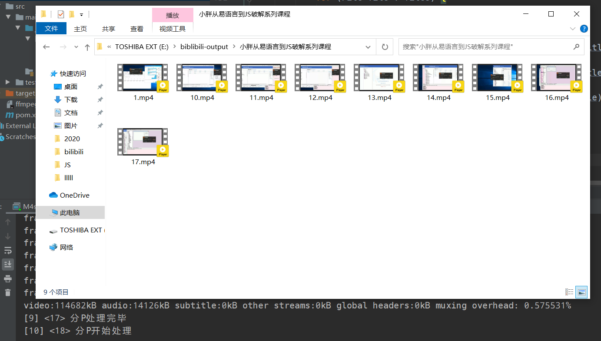

背景
这两天在 B 站看到一些 JS 逆向方面的视频，因为一时半会儿看不完，而且怕过段时间视频会被删，我就把视频全部缓存了。
结果拉到电脑上一看，B 站缓存已经不再用 blv 格式了，改用了 m4s 分别保存音频和视频。虽然搞不懂为什么 B 站要搞这种无聊的事情，但既然它已经这么干了，我就只能写个程序批量合并音视频了。
准备工作
下载好 FFmpeg，配置好环境变量，然后测试一下在 java 中能否正常调用 FFmpeg：
public static void main(String[] args) throws IOException {
ProcessBuilder builder = new ProcessBuilder();
builder.command("ffmpeg", "-version");
Process process = builder.start();
Scanner scanner = new Scanner(process.getInputStream());
while (scanner.hasNextLine()) {
System.out.println(scanner.nextLine());
}
}输出结果：
ffmpeg version git-2020-05-04-5767a2e Copyright (c) 2000-2020 the FFmpeg developers
built with gcc 9.3.1 (GCC) 20200328
configuration: --enable-gpl --enable-version3 --enable-sdl2 --enable-fontconfig --enable-gnutls --enable-iconv --enable-libass --enable-libdav1d --enable-libbluray --enable-libfreetype --enable-libmp3lame --enable-libopencore-amrnb --enable-libopencore-amrwb --enable-libopenjpeg --enable-libopus --enable-libshine --enable-libsnappy --enable-libsoxr --enable-libsrt --enable-libtheora --enable-libtwolame --enable-libvpx --enable-libwavpack --enable-libwebp --enable-libx264 --enable-libx265 --enable-libxml2 --enable-libzimg --enable-lzma --enable-zlib --enable-gmp --enable-libvidstab --enable-libvmaf --enable-libvorbis --enable-libvo-amrwbenc --enable-libmysofa --enable-libspeex --enable-libxvid --enable-libaom --disable-w32threads --enable-libmfx --enable-ffnvcodec --enable-cuda-llvm --enable-cuvid --enable-d3d11va --enable-nvenc --enable-nvdec --enable-dxva2 --enable-avisynth --enable-libopenmpt --enable-amf
libavutil 56. 43.100 / 56. 43.100
libavcodec 58. 82.100 / 58. 82.100
libavformat 58. 42.102 / 58. 42.102
libavdevice 58. 9.103 / 58. 9.103
libavfilter 7. 80.100 / 7. 80.100
libswscale 5. 6.101 / 5. 6.101
libswresample 3. 6.100 / 3. 6.100
libpostproc 55. 6.100 / 55. 6.100
没问题，那就正式开搞吧。
分析
观察 APP 缓存目录，其结构如下：
|-- av号（将来应该会换成bv号）
|-- 分P号（从1开始）
| danmaku.xml（弹幕）
| entry.json（视频基本信息）
|-- 清晰度（16/32/64/80/112等）
| audio.m4s（音频文件）
| index.json（音视频资源信息）
| video.m4s（视频文件）entry.json 结构如下：
{
"media_type":2,
"has_dash_audio":true,
"is_completed":true,
"total_bytes":168190606,
"downloaded_bytes":168190606,
"title":"小胖从易语言到JS破解系列课程",
"type_tag":"80",
"cover":"http://i1.hdslb.com/bfs/archive/25534975dec25b1f42e6b36a85f5809ca170f9d3.jpg",
"prefered_video_quality":80,
"guessed_total_bytes":0,
"total_time_milli":984533,
"danmaku_count":0,
"time_update_stamp":1588794825179,
"time_create_stamp":1588793523688,
"can_play_in_advance":true,
"interrupt_transform_temp_file":false,
"avid":61587452,
"spid":0,
"seasion_id":0,
"bvid":"BV1Gt411w7Yo",
"owner_id":38192455,
"page_data":{
"cid":107238393,
"page":29,
"from":"vupload",
"part":"30.1.HTTP协议补充_极验滑块验证码对接滴滴打码",
"link":"",
"rich_vid":"",
"vid":"",
"has_alias":false,
"weblink":"",
"offsite":"",
"tid":39,
"width":1920,
"height":1080,
"rotate":0,
"download_title":"视频已缓存完成",
"download_subtitle":"小胖从易语言到JS破解系列课程 30.1.HTTP协议补充_极验滑块验证码对接滴滴打码"
}
}entry.json 中有用的字段是 title 和 page_data.part。
两个 m4s 文件都是未加密的，可以直接用 FFmpeg 合成 mp4 文件，具体语句是 ffmpeg -i video.m4s -i audio.m4s -codec copy output.mp4
写代码
package bilibili;
import com.alibaba.fastjson.JSONObject;
import java.io.*;
import java.util.*;
import java.util.stream.Collectors;
import java.util.stream.Stream;
/**
* @author yuan
* @version 1.0
* @date 2020/5/7 15:12
*/
public class M4sProcesser {
private static final String BASE_PATH = "E:/lll/bilibili/";
private static final String OUTPUT_PATH = "E:/biblibili-output/";
private static final String OUTPUT_FORMAT = ".mp4";
private static final String ENTRY_JSON = "entry.json";
private static final String TITLE = "title";
private static final String PAGE_DATA = "page_data";
private static final String PART = "part";
private static final String ILLEGAL_CHARS = "[\\\\/:*?\"<>|]+";
/**
* 获取一个目录下的所有子目录
*
* @param directory 目录
* @return 子目录列表
*/
private static List<File> listSubDirectories(File directory) {
return Optional.ofNullable(directory)
.filter(File::isDirectory)
.map(File::listFiles)
.map(Stream::of)
.map(fileStream -> fileStream
.filter(File::isDirectory)
.collect(Collectors.toList()))
.orElse(Collections.emptyList());
}
/**
* 从entry.json读取视频标题
*/
private static Map<String, String> readJson(File file) throws FileNotFoundException {
Map<String, String> result = new HashMap<>(2);
Scanner scanner = new Scanner(new FileInputStream(file));
StringBuilder jsonString = new StringBuilder();
while (scanner.hasNextLine()) {
jsonString.append(scanner.nextLine());
}
scanner.close();
JSONObject json = JSONObject.parseObject(jsonString.toString());
result.put(TITLE, json.getString(TITLE));
result.put(PART, json.getJSONObject(PAGE_DATA).getString(PART));
return result;
}
/**
* 生成FFmpeg指令
*/
private static List<String> generateCommand(String video, String audio, String output) {
List<String> command = new LinkedList<>();
command.add("ffmpeg");
command.add("-i");
command.add(video);
if (new File(audio).exists()) {
command.add("-i");
command.add(audio);
}
command.add("-codec");
command.add("copy");
command.add(output);
return command;
}
/**
* 生成输出文件路径
*/
private static String generateOutputPath(String avPath, String partTitle) {
StringBuilder title = new StringBuilder(partTitle.replaceAll(ILLEGAL_CHARS, " "));
String outputPath = avPath + "/" + title + OUTPUT_FORMAT;
while (new File(outputPath).exists()) {
title.append("-");
outputPath = avPath + "/" + title + OUTPUT_FORMAT;
}
return outputPath;
}
/**
* 合成音视频
*/
private static void processM4s(File directory, String avPath, String partTitle) throws IOException, InterruptedException {
String video = directory.getPath() + "\\video.m4s";
String audio = directory.getPath() + "\\audio.m4s";
String output = generateOutputPath(avPath, partTitle);
ProcessBuilder builder = new ProcessBuilder();
builder.command(generateCommand(video, audio, output));
Process process = builder.start();
// 开两个专门的线程接收输入信息，防止死锁
new Thread(() -> {
Scanner scanner = new Scanner(new BufferedInputStream(process.getInputStream()));
while (scanner.hasNextLine()) {
System.out.println(scanner.nextLine());
}
scanner.close();
}).start();
new Thread(() -> {
Scanner scanner = new Scanner(new BufferedInputStream(process.getErrorStream()));
while (scanner.hasNextLine()) {
System.out.println(scanner.nextLine());
}
scanner.close();
}).start();
// 阻塞等待
process.waitFor();
}
/**
* 创建输出目录
*/
private static String markVideoDirectory(String avTitle) {
String avPath = OUTPUT_PATH + avTitle.replaceAll(ILLEGAL_CHARS, " ");
File avDirectory = new File(avPath);
while (!avDirectory.mkdir()) {
avPath += "-";
avDirectory = new File(avPath);
}
return avPath;
}
/**
* 处理视频的各个分P
*/
private static String processParts(File av) throws IOException, InterruptedException {
// 获取av号（目录标题），暂时用作视频标题
String avTitle = av.getName();
// 获得分P
List<File> parts = listSubDirectories(av);
String avPath = "";
for (int i = 0; i < parts.size(); i++) {
File part = parts.get(i);
String partTitle = "P" + part.getName();
List<File> files = Optional.ofNullable(part.listFiles())
.map(Arrays::asList)
.orElse(Collections.emptyList());
List<String> fileNames = files.stream().map(File::getName).collect(Collectors.toList());
if (!fileNames.contains(ENTRY_JSON)) {
continue;
}
// 先获取视频标题和分P标题
for (File file : files) {
if (ENTRY_JSON.equals(file.getName())) {
Map<String, String> params = readJson(file);
if (i == 0) {
avTitle = params.getOrDefault(TITLE, avTitle);
}
partTitle = params.getOrDefault(PART, partTitle);
// 如果只有1P就用视频标题作为分P标题
if (parts.size() == 1 && "P1".equals(partTitle)) {
partTitle = avTitle;
}
break;
}
}
// 创建视频对应的输出目录
if (i == 0) {
avPath = markVideoDirectory(avTitle);
}
// 传入标题用于合成，这里没有考虑下载了多种清晰度的情况
for (File file : files) {
if (file.isDirectory()) {
System.out.println("[" + (i + 1) + "] <" + partTitle + "> 分P开始处理");
processM4s(file, avPath, partTitle);
break;
}
}
System.out.println("[" + (i + 1) + "] <" + partTitle + "> 分P处理完毕");
}
return avTitle;
}
public static void main(String[] args) {
List<File> avList = listSubDirectories(new File(BASE_PATH));
avList.forEach(av -> {
try {
String avTitle = processParts(av);
System.out.println("[*] <" + avTitle + "> 全部处理完毕");
System.out.println("-------------------------------------");
} catch (IOException | InterruptedException e) {
e.printStackTrace();
}
});
}
}经测试，可以正确处理 B 站 APP 的视频缓存。
